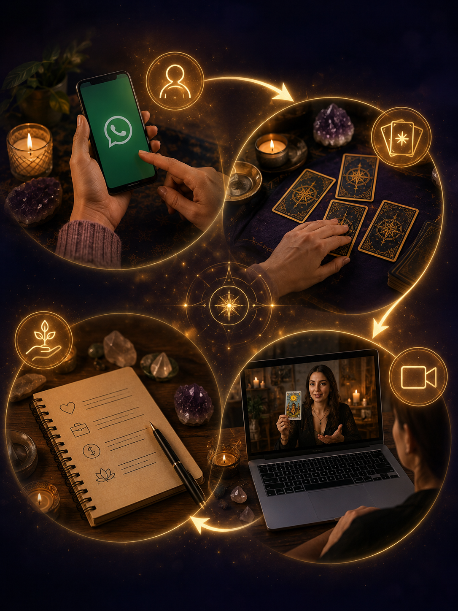

Tarot · Videoconsultas
Lecturas de tarot y videoconsultas personalizadas para el amor, el retorno de tu pareja, destrabes laborales y económicos, y limpiezas energéticas. Sin vueltas, sin esperas: respuestas claras para avanzar.
Servicios
Cada consulta es personalizada según tu situación particular. Elegí el camino que mejor representa lo que estás atravesando.
Una tirada enfocada en tu consulta puntual, con respuestas directas sobre lo que querés saber y los pasos a seguir.
Trabajos energéticos para acercar a la persona amada, reconciliar una relación y fortalecer el vínculo, sin importar cuán difícil parezca.
Rituales para abrir caminos en lo laboral y económico: nuevas oportunidades, mejoras y prosperidad que estaban estancadas.
Protección y limpieza profunda para cortar envidias, malas energías o trabajos hechos por personas desconocidas.
Cómo trabajo
Cada lectura parte de escuchar tu situación con atención: no hay respuestas genéricas ni mensajes armados. Las cartas se interpretan en función de lo que realmente estás viviendo, ya sea en el amor, el trabajo o tu energía personal.
Las consultas se realizan por videollamada, en un espacio íntimo y confidencial, para que puedas hablar con total libertad y recibir una devolución concreta sobre qué hacer a partir de ahora.
Consultas por videollamada desde donde estés, con total privacidad.
Acompañando procesos de amor, trabajo y bienestar personal.
Acompañamiento por mensajes para resolver dudas sobre lo trabajado.
Proceso
Nos escribís por WhatsApp y nos contás qué te está pasando: amor, trabajo, dinero o energía.
Preparamos una lectura enfocada exclusivamente en tu consulta, sin generalidades.
Nos conectamos por videollamada para repasar juntos lo que dicen las cartas y qué significa para vos.
Recibís indicaciones concretas y acompañamiento para los días siguientes a la consulta.

Testimonios
"Me ayudó a entender qué estaba pasando con mi pareja y cómo acercarnos de nuevo. A los pocos días empezamos a hablar otra vez."
"Después de meses separados, no perdía las esperanzas de reconciliarnos. La consulta me dio mucha paz y, a las pocas semanas, él volvió a buscarme. Hoy estamos mejor que antes."
"Sentía que la relación estaba perdida. Después del trabajo energético, empezamos a hablar de nuevo y pudimos sanar viejas heridas. Estoy infinitamente agradecida."
"No sabía qué hacer para recuperar a mi pareja. La lectura fue muy clara y el acompañamiento posterior me ayudó a entender los pasos correctos. Hoy estamos juntos de nuevo."
"Tenía un trabajo trancado hacía meses. Después de la limpieza energética todo se acomodó: me llamaron para una propuesta que no esperaba."
"La consulta fue por videollamada y se sintió muy cercana. Me dio mucha tranquilidad entender qué estaba pasando y qué hacer al respecto."
Contacto
Contanos brevemente tu situación y coordinamos el día y la hora de tu videoconsulta. Respondemos a la brevedad.